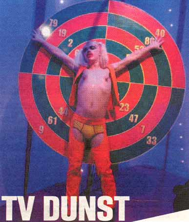
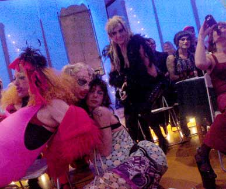
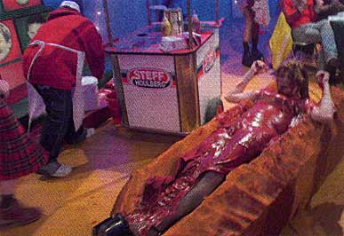
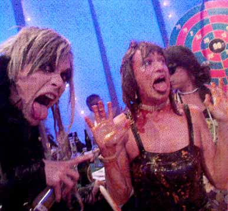

| Marts 2004 |
 |
| The Thom ved hjulet |
Kan man spille bingo i dræberstilletter?
Det kan man måske godt, men det var ikke formålet. Kan man være i live tv og således optræde uredigeret? Det kan man godt, men det var ikke det der skete, da dunst var inviteret i studiet for at være publikum til Zulu Bingo og Jan Elhøjs alfobiske drengerøvssmåborgerlighed (herefter kaldet Alfoben og Småborgeren) en fugtig tirsdag i februar.
Åh live: Ingen klip. Ingen drejebog, men bare ren dunsten igennem for snurrende kameraer og sexede stivnakkede boomstangbærere. Åh live. Mulighed for på landsdækkende tv at om ikke bredsprede sine dunstende ideologier så i det mindste markere så mange faner som muligt med udsigten til at vinde en fiskekutter eller andet gejl man kan bruge som kærkommen rekvisit til en fest. Åh live. De vil have os, som den homoede undergrund vi er, og nu skal vi nok vise dem, tænker man i dunst.
Afsted: Hvem er det i bussens lyskegler. Det er skam bare Ramona Macho som med letregn i parykken og sin svalende velkomstdans gener alle væltende ind i bussen til de gratis øl man er blevet lovet akkompagneret af et eller andet radiomuzak.
Ankomst: Et eller andet sted på en slags pløjemark med boligblokke i baggrunden, hvor man hverken kan undfly eller føle sig tilpas og ind i studiet og frem med smøgerne og den medbragte sprut, et par poppers og lidt joint. Men nå nej. Det er ikke tilladt at ryge, det er ikke tilladt at falde i ledningerne, og det er ikke tilladt at løbe rundt. Man skal sætte sig og være parat, så alle tonser forvildede rundt. En anden gruppe er i studiet med dunst, de sidder i baggrunden. Ja.
Pep: Dårlige vittigheder, som ingen rigtig forstår, så man skrider ud for at ryge.
 |
| Festlig leben i den gamle salon |
3-2-1: Alfoben Elhøj kommer ind i studiet iklædt et eller skotskternet out fit, som han selv vælger med sit underbid, så nu skal der klappes, nu skal der piftes, nu skal der gøres som der bliver sagt, så dunst kræver flere øl og hvorfor kan man ikke ryge i studiet og jeg skal pisse, og hvorfor skal vi bare sidde her, indtil Ramona Macho skal indånde luft fra en eller anden ballon og Alfoben kalder hende en dragqueen, hvortil Ramona siger: Jeg er ikke en drag queen, jeg er Ramona Macho! Og Dennis Agerblad skubbes ned i et skumgummi pølsebrød og overhældes med ketchup og ristede løg og er så lækker, at Liebling Siebling kaster sig i hans arme. Og Alexis som upåvirket af at være i studiet skal trække kondomer fra en automat for at vinde et eller andet og med perfektsiddende krøller taler med rolig stemme. Og Thom æder mad som kastes på hjulet. Og da en dansk stjerne hentes ud fra en boks i hjørnet er der ingen der kender ham, en eller anden blond dreng er det, man overvejer at spænde ben. Og én kommer ind med en lille hund, som Ramona træder på i forsøg på at mase sig frem mod kameraet. Og Puta smider flødekarameller tilbage i hovedet på Småborgeren. Og øl hældes ud på gulvet. Og der stjæles gaver fra bagvæggen. Og der råbes banko eller bingo hele tiden.
 |
| Dennis Agerblad i hotdog |
Det var så det: For nu har de lugtet lunterne. De har forstået at dunst vil trashe hele lortet. De har forstået at dunst ikke er beæret eller noget over at have klaret hele vejen fra københavnerkælder til glittet tv på en pløjemark, og at dunst ikke er fan af Den Alfobiske. Men dunst troede da i det mindste, at man i langtudeheden, som både dunst og Småborgeren har til fælles, kunne finde et eller andet identisk fiksérpunkt der ville kunne bringe os alle op til ukendte højere plateauer for dansk tv. Men nej, det tør han ikke, for nu har han fast job og han har nogle fans (især i Jylland), som der skal tages hensyn til, og i bund og grund vil han vel hellere bare køre sig selv af i stedet for at tænke videreudvikling. Og Alfoben bliver tydeligt irriteret. For han mister kontrollen på enkelte tidspunkter, når der går huller i den menneskekæde af ZULU-medarbejdere som stimler sammen for at forhindre dunstende udslip hver gang Ramona Macho, Bob, Dennis Agerblad, Thom, Hairwerk, Liebling Siebling, Alexis, Ulle eller Puta rejser sig for at løbe mod kameraet.
 |
| Hairwerk og Dennis Agerblad |
Og live? Ja det var live tv, men man zoomede helt ind på Underbiddet, så ingen flagrende trashdrag forulempede sig til skærmopmærksomhed, man manipulerede optagelserne, så de storædende Thom og Liebling Siebling pludselig forsvandt fra skærmen og man fik ikke al det stinkende rod med fra bordene, så...
Konklusion: Små drengerøve med hang til store blonde patter er generelt ikke videre selvreflekterende og kan selv ikke (hvis strålen rettes i deres retning og man siger: åbn munden!) klare det pis, de selv tager på folk. Især ikke hvis det er transer som jo altså har pikke. Og dunst mistede sin kommercielle uskyld, som bare fører til et mere dunstdetermineret arbejde henimod verdensherredømmet!
Tekst: Martin Kjær
Foto: Martin Kjær
Print denne side